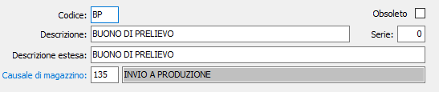

Causali buoni di prelievo
La tabella consente di impostare le causali da utilizzare per la generazione o l'inserimento dei buoni prelievo.

è possibile avere più causali con stessa numerazione agendo sulla serie inserendo causali con serie differente; la causale di magazzino è obbligatoria e deve essere relativa a movimenti di trasferimento.